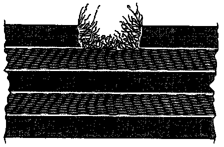
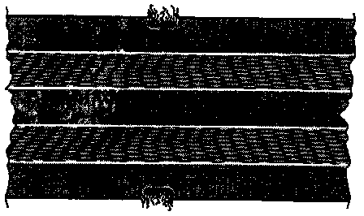
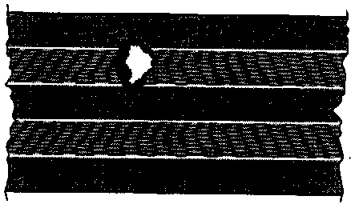

Checking Seat Belts
WARNING: After every accident, the seat belt system must be carefully inspected! If any damage is discovered when inspecting the check points, the customer must be in formed that ft is necessary to replace the belts.Check Points:
^ Check belt webbing
^ Check belt reel (locking effect)
^ Visually check belt buckles (latches)
^ Check belt latch function
^ Check belt guides and lock tongue
^ Check securing parts and anchorage points
^ Checking lap belt automatic retractor
NOTE: If the customer refuses to have a damaged seat belt replaced, an appropriate note should be made on the repair order
Belt Webbing, Checking
- Pull belt completely out of belt reel or lap belt adjustment tongue.
- Inspect belt straps for dirt and, if necessary, wash with mild soap solution ==> also refer to Owner's Manual.
- If either of the following illustrated damage examples (-1- or -2-) are found on a vehicle that has been involved in an accident, replace seat belt complete with belt latch.
Example 1:

Cut, torn or chafed belt webbing
Example 2:

Tears on edges of belt webbing
Example 3:

Burn spots, such as from cigarettes or similar materials
^ If damage as illustrated in examples -1-, -2- or -3- is found on vehicle that has not been involved in an accident, it is sufficient to replace damaged belt only.
Belt Reel, Checking (locking Effect)
- Belt reel has two locking functions.
^ First locking function is initiated by belt being jerked out of reel (belt extraction acceleration)
Checking:
- Pull belt out of reel with firm jerk.
^ No locking effect - replace seat belt complete with belt latch.
^ If it is difficult to pull belt out or reel belt in, first check whether position of belt reel has been altered.
^ Second locking function is initiated by sudden change in vehicle movement (vehicle-dependent locking function)
Checking:
- Fasten seat belt.
- Accelerate vehicle to 20 km/h (approx. 12 mph) and then carry out emergency braking with foot brake.
^ If seat belt is not locked by locking mechanism during braking procedure, seat belt complete with belt latch must be replaced.
CAUTION: For safety reasons, the road test of the second locking function should be carried out on traffic-free stretch of road to ensure that other motorists/pedestrians are not endangered.
Belt latch - Visual check
- Inspect belt latch for cracks and breaks.
^ If damage is found, replace seat belt complete with belt latch.
Belt latch - Functional Check
Checking latch mechanism:
- Push locking tongue into belt latch until it engages audibly. Check whether locking mechanism is properly engaged by giving belt a firm pull.
^ If belt tongue fails even only once to engage properly in belt latch during at least 5 tests, seat belt complete with belt latch must be replaced.
Checking Release Mechanism:
- Release seat belt by pressing button on belt latch with finger pressure.
- When belt is slack, locking tongue must spring out of belt latch on its own.
^ Carry out test at least 5 times. If belt tongue fails even only once to spring out of latch, seat belt complete with belt latch must be replaced.
WARNING: NEVER, under any circumstances use any lubricant to eliminate noise or stiffness at belt latch release buttons.
Belt Guides And Locking Tongues, Checking
- Plastic-covered guides show, after strain on belt system (when belt was fastened during accident) fine parallel scoring. (Wear that has been brought about by frequent belt use can be recognized by smooth signs of wear that are free of scoring).
- Inspect For deformation, fracturing and cracks in plastic.
^ If scoring and/or damage is determined, replace seat belt complete with belt latch.
Belt Securing Parts And Anchorage Points, Checking
^ Latch bracket deformed (stretched)
^ Height adjustment fitting not working
^ Anchorage point (seat, pillar, vehicle floor) distorted or thread damaged
^ If damage is found on these parts, replace seat belt complete with belt latch.
^ Replace anchorage points.
NOTE: In case of damage that is not the result of an accident but caused only by wear, for example, only the part that is actually damaged need be replaced.